Re-diseño de un sitio de coaching
El copy de un sitio web es una herramienta de ventas, tu sitio web es la oportunidad de que le digas a tu visitante lo que le ofreces y debes capturar su atención lo antes posible. Tus visitantes ya están buscando tu solución, tan solo debes mostrarles que puedes solucionar su problema.
Cuando un visitante visita tu sitio, no quiere perder su tiempo, ser considerado, en este sentido, es hacer que su visita a tu sitio sea productiva. Si tienes lo que busca, lo debe encontrar fácilmente y con claridad, de lo contrario, debe tener claro de qué es el sitio para poder elegir.
Para ejemplificar mi proceso, usaré el sitio de CEMEHC. CEMEHC es “un lugar para que recuerdes tu ser y ser quien realmente eres...”. Esta frase es lo más claro que se puede ser con este lugar en particular. El director, Rodrigo Jauberth, ofrece cursos de DHNL, en los que incorpora técnicas de mindfulness y PNL para enseñar a sus alumnos a buscar soluciones a sus problemas emocionales desde ellos mismos.
Para comenzar con el diseño, primero hago una investigación previa para poder hacer sugerencias en el copy y en la estructura de las páginas, tomo en cuenta los valores, las metas y el concepto del proyecto. En el caso de CEMEHC se ve de la siguiente manera:
Nombre del proyecto: CEMEHC
Concepto: los alumnos son su propio terapeuta
Monetización: tomar los cursos
Objetivos:
Marca:
Con esto claro, puedo elegir con confianza el tipo de letra, en este caso una letra amigable y relajada. Una de tipo redondeada, Nunito Sans.
La primera que vemos es la cebecera actual de CEMEHC.
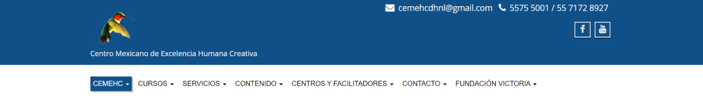Lo primero que se puede hacer es alinear todo y darle un espaciado correcto. Acto seguido eliminar lo que no pertenece a la cabecera. Ejemplo, los datos como el correo y el teléfono, estos datos usualmente el usuario los busca más bien en el pie de página, por lo que se eliminan de esta parte definitivamente. Los íconos sociales pueden ir aquí sin ningún problema, pero el menú es lo suficientemente grande para que no sea apropiado ponerlos en esta parte.
En la parte del nombre, si bien es importante que la gente sepa, puede ir en otro lugar, haciendo todo el diseño mucho más limpio. La cabecera queda de la siguiente manera:
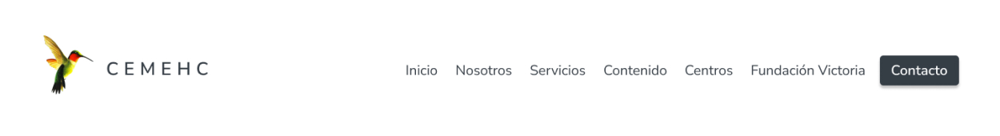Dando más espacio a todo crea una mayor sensación de limpieza y abundancia.
En la sección de héroe debemos contestar las siguientes 3 preguntas:
Primero veamos cómo funciona actualmente:
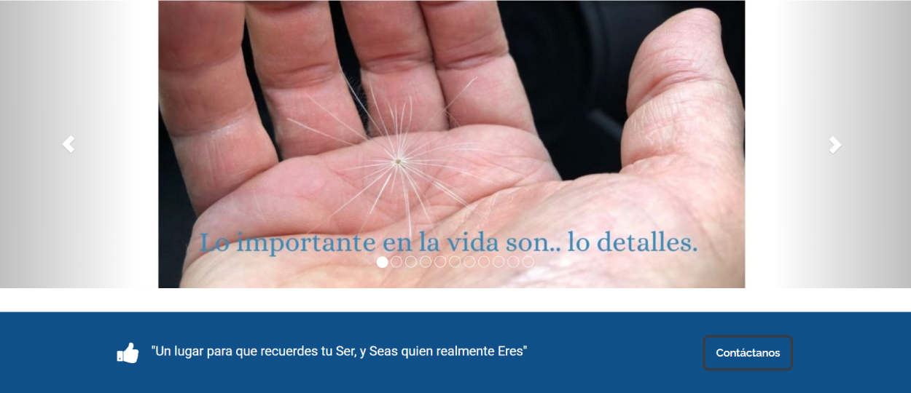Tenemos un carrusel de imágenes con una frase y luego un divisor con llamada a la acción (CTA). El problema con los carruseles es que tienen un porcentage muy bajo de visitantes que lo miran completo. En otras palabras, al poner un carrusel de imágenes lo que haces es ocultar información al visitante.
La mejor opción es no usarlos cuando la información que quieres mostrar es importante.
La sección de héroe es la parte más importante de la página, porque es posiblemente la única oportunidad que tienes de persuadir a un visitante que los puedes ayudar, si no lo logras aquí, posiblemente se vayan inmediatamente. Por esta razón queremos aprovechar esta sección para responder las preguntas vistas anteriormente de la mejor forma posible.
Al poner un carrusel en esta sección, estás diciendo a tus visitantes que deben esperar para recibir la información que buscan y que tienen que tomar pasos adiconales. La sección de héroe actual es una invitación para irse del sitio.
Para hacer la sección de héroe, utilicé los resultados de la investigación de los usuarios actuales de CEMEHC, qué buscaban en el momento de entrar al sitio y de qué forma se les ayudó siendo alumnos, es decir, cual fue su transformación.
Entendí que las personas buscan ayuda a problemas emocionales, es decir, problemas familiares, problemas personales, problemas de acoso, entre otros. Y para transmitir el cambio que las personas sufren en CEMEHC, busqué una imagen que expresara lo que un alumno dijo: “Detente, inhala, exhala, guarda silencio y date cuenta!!...Solo el silencio en nuestro interior nos ayuda a comprender y entender nuestros más profundos miedos”.
Entonces elegí un video. En el que cae una gota de agua. Me parece que expresa la cualidad del silencio y de detenerse. La sección de héroe quedó de esta manera:
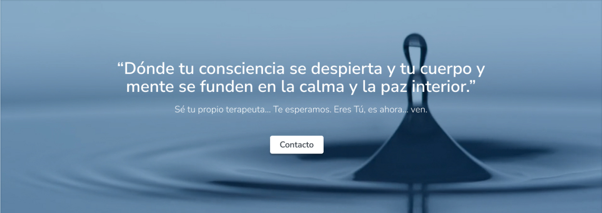También traté de mantenerlo simple y mínimo, ya que al ser un lugar más espiritual, me parece que funciona mejor.
La sección de servicios actual de CEMEHC:
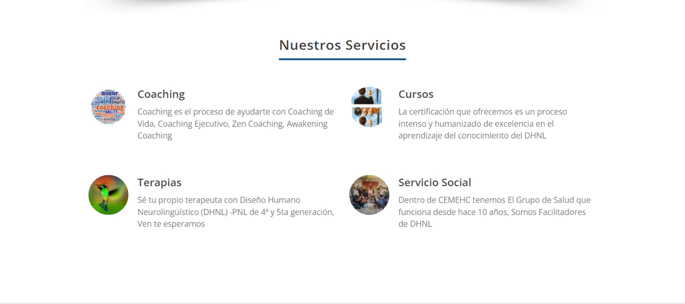Me parece que esta es la mejor sección de la página actual ya que muestra los servicios que se ofrecen en CEMEHC. Precisamente una de las mejores prácticas es usar esta sección para mostrar los 3 servicios más importantes que se ofrecen.
Cambié la claridad con que se expresan los servicios y la relevancia en el orden, quedando de la siguiente manera:
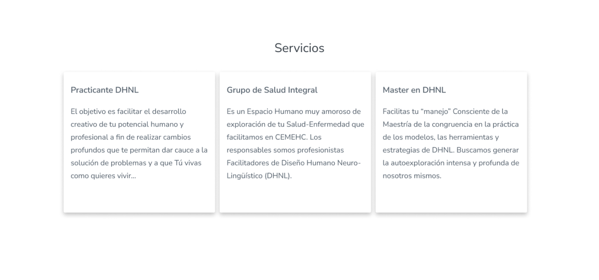También se podrían poner imágenes en las cartas y seguiría manteniendo un aspecto limpio.
En la página prácticamente ya no hay más información, por lo que ya no se puede comparar pero dejo la imagen de la última sección y el pie de página para referencia:
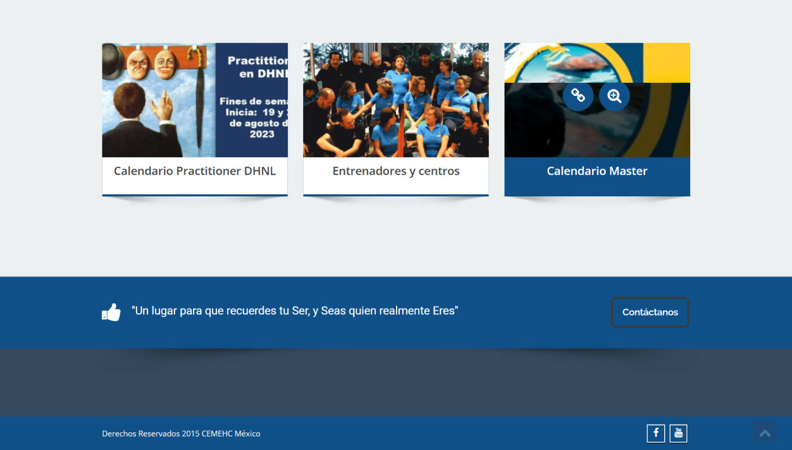La tercera sección es la mejor oportunidad para decir quién eres, en este caso, también puede ser, en qué es diferente de otras formar de terapia. Esta sección se modificó de la siguiente manera:
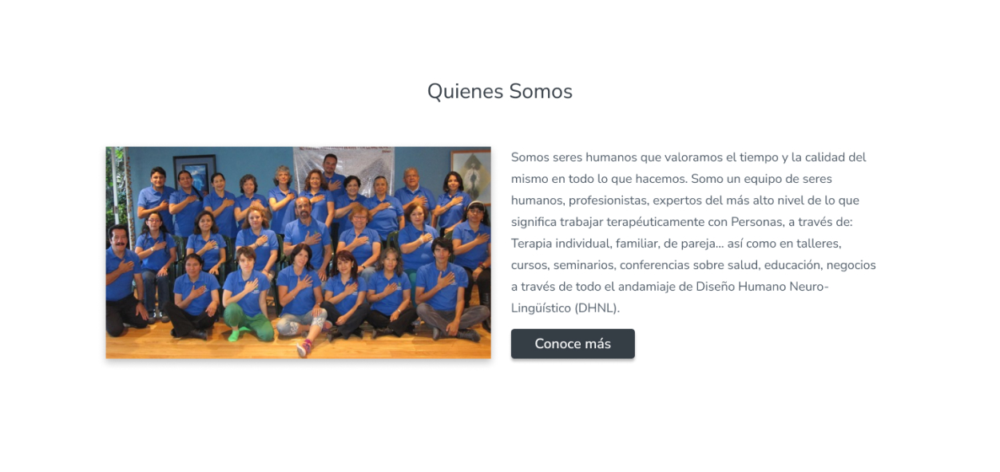La cuarta sección se usa para mejorar la credibilidad, aquí se pueden usar testimonios o marcas a las que se hallan ayudado, en este caso puse versiones anónimas de lo que otros alumnos sienten con respecto a CEMEHC para darle una idea a un nuevo visitante de la transformación que puede encontrar en caso de dar el siguiente paso.
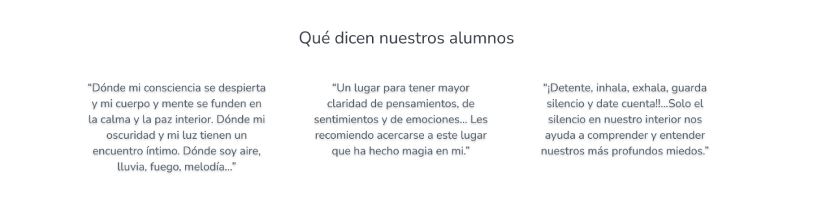Se debe poner una forma de contacto en la pantalla de inicio sin falta, ya que hacemos que sea más fácil para el visitante ponerse en contacto con nosotros, mejorando su experiencia y las conversiones.
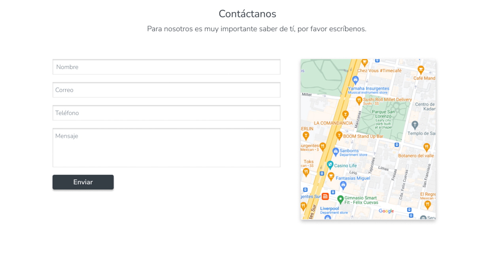Por último ponemos el pie de página. Los visitantes que llegan al pie de página ya están interesados en los servicios que ofreces, pero también cabe la posibilidad de que no se tomaron el tiempo de leer todo el contenido, así que muchas veces buscan un resumen, por lo que se debe explicar todo de forma corta, con el objetivo de dar a los visitantes la oportunidad de contactarnos.
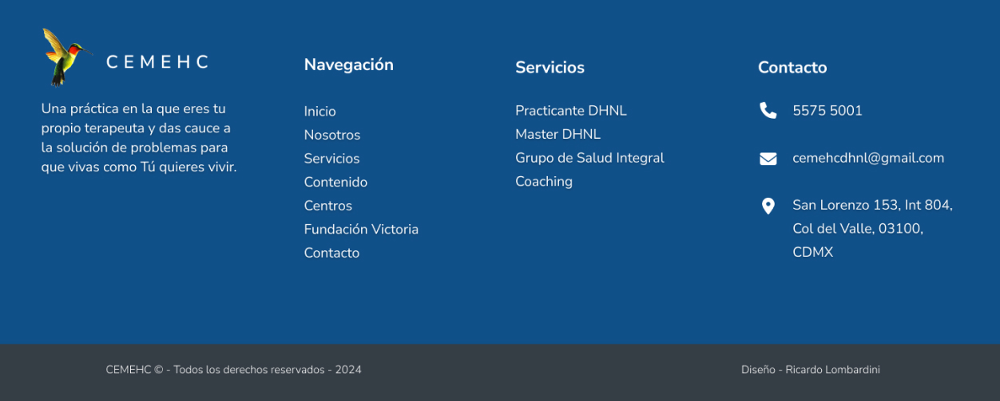Comparación lado a lado de las dos versiones. Antigua a la izquierda, nueva a la derecha.
Ponte en contacto conmigo, respondo todos los mensajes.